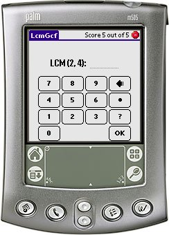

In LcmGcf you practice solving LCMs and GCFs of two or three numbers. You setup the characteristica of the quiz, takes the quiz and then enter the score into the Last 10 Scores table. The scores can be exported to Memo Pad.
LcmGcf was created as a response to the wishlist found at: http://www.mpsomaha.org/willow/technology/wishlist.html.
LcmGcf is released under the GNU General Public License v2 and requires Palm OS 3.0 or better.
You can support this project by donating any amount to my Pay Pal account.
You can get Angles, LcmGcf, MathAce, MixedUp, PowerPlay and Simplify in one Bundle.
Thanks goes to Tony Vincent for the nice icons. Tony has a nice website located at http://www.learninginhand.com which focuses on how to use Handheld computers as a teaching aid.
v1.0 (2006-03-11) First public release of LcmGcf. v0.9 (2005-12-30) Beta release of LcmGcf.